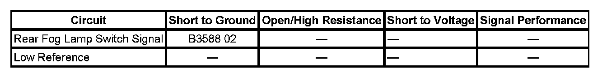

B3588
DTC B3588
DIAGNOSTIC INSTRUCTIONS
- Perform the Diagnostic System Check - Vehicle prior to using this diagnostic procedure. Initial Inspection and Diagnostic Overview
- Review Strategy Based Diagnosis for an overview of the diagnostic approach.
- Diagnostic Procedure Instructions provides an overview of each diagnostic category.
DTC DESCRIPTOR
DTC B3588 02
Rear Fog Lamp Switch Circuit Short to Ground

DIAGNOSTIC FAULT INFORMATION
CIRCUIT/SYSTEM DESCRIPTION
The auxiliary body control module (XBCM) receives a momentary ground signal from the rear fog lamp switch when the switch is activated. The rear fog lamps will remain illuminated until the switch is activated again or when the ignition key is cycled.
CONDITIONS FOR RUNNING THE DTC
System voltage to the XBCM must be 9-16 volts.
CONDITIONS FOR SETTING THE DTC
The rear fog lamp switch signal circuit is active for longer than 10 minutes.
ACTION TAKEN WHEN THE DTC SETS
The rear fog lamps will be disabled.
CONDITIONS FOR CLEARING THE DTC
- The DTC will be current for as long as the fault is present.
- When the fault is no longer present, the DTC will be a history status code.
- A history DTC will clear after 50 ignition cycles or with a scan tool using the clear DTCs function.
SYSTEM VERIFICATION
Use the scan tool output control for the Auxiliary Body Control Module to activate the rear fog lamps. The rear fog lamps should illuminate.
CIRCUIT/SYSTEM TESTING
1. Ignition OFF, disconnect the rear fog lamp switch.
2. Ignition ON, verify that the rear fog lamp switch parameter displays Inactive in the Auxiliary Body Control Module data list.
- If the parameter displays Active, test the rear fog lamp switch signal circuit for a short to ground. If the circuit tests normal, replace the XBCM.
3. Ignition OFF, reconnect the rear fog lamp switch.
4. Ignition ON, verify that the rear fog lamp switch parameter displays Inactive in the Auxiliary Body Control Module data list.
- If the parameter displays Active, replace the rear fog lamp switch.
REPAIR INSTRUCTIONS
Perform the Diagnostic Repair Verification after completing the diagnostic procedure.
- Fog Lamp Switch Replacement
- Control Module References for XBCM replacement, setup, and programming. Verification Tests Programming and Relearning